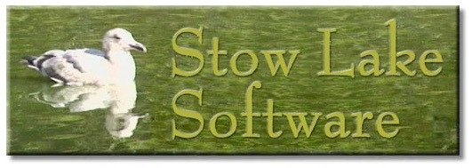

Stow Lake Software
We specialize in software and firmware development of micro-controller boards based on System on a Chip(SoC)
processors. We develop for embedded devices and IoT.
Take a look at some tutorials:
What is SPI explains the basics of Serial Peripheral Interface.
SPI on D21SPI describes programming for alternative connections to SPI
on Arduino boards based on Atmel SAMD21G18A (ARM cortex M0) processors.
SPI on AVR describes slave mode and interrupt programming for SPI on Arduino boards
with AVR processors.
Email contact: danny at this domain.